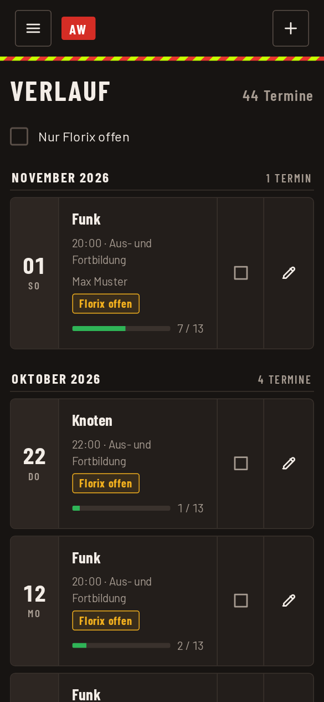
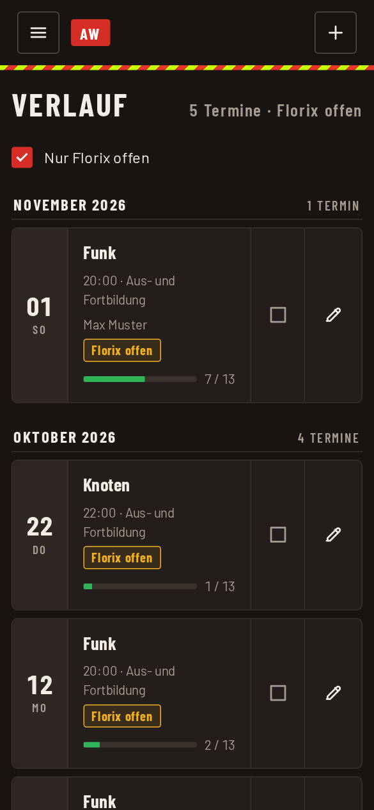

Verlauf, Termine ändern und Florix
Im Menü unter „Vorherige Anwesenheiten“ stehen alle gespeicherten Termine, nach Monaten sortiert und mit dem neuesten oben. Ihr seht Datum, Thema, Dienstart, Übungsleiter und wie viele von wie vielen anwesend waren. Bei mehreren Abteilungen wählt ihr oben die Abteilung.

Termin ansehen, ändern, löschen
- Auf Thema oder Datum tippen öffnet die Ansicht mit allen Angaben und den Anwesenden.
- Auf den Stift tippen öffnet den Termin zum Ändern. Gespeichert wird wie beim Anlegen.
- In der Ansicht des Termins gibt es unten Zurück, E-Mail und für Abteilungsadmins zusätzlich Löschen. Gelöscht wird nach einer Rückfrage und lässt sich nicht rückgängig machen.
Termine, die aus früheren Aufzeichnungen übernommen wurden, tragen das Kennzeichen „nachgetragen“.
Florix
Florix ist das Verwaltungsprogramm, in das die Termine zusätzlich übertragen werden. Damit nichts vergessen wird, merkt sich die App, welche Termine dort schon erfasst sind. Das pflegen Admin und Abteilungsadmin.
- Am Ende jeder Zeile steht ein Kästchen. Leer heißt: noch nicht erfasst, dazu steht „Florix offen“ in der Zeile. Antippen setzt den Haken „erfasst“, nochmal antippen nimmt ihn zurück.
- In der Ansicht eines Termins zeigt eine Zeile „Florix: erfasst von … am …“ oder „offen“. Der Knopf „In Florix erfasst“ bzw. „Florix zurücknehmen“ setzt den Status.
- Mit dem Filter „Nur Florix offen“ oben in der Liste seht ihr nur, was noch fehlt. Ein erledigter Termin verschwindet sofort aus der Liste. „Rückgängig“ holt ihn zurück, falls ihr euch vertippt habt.
- Ist nichts mehr offen, steht dort „Alles in Florix erfasst“.

Hinweis: Nur der Status wird gespeichert. Die Daten selbst überträgt die App nicht nach Florix, das macht ihr wie bisher dort.